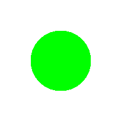
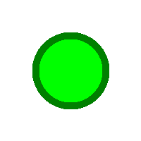
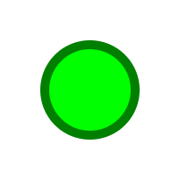
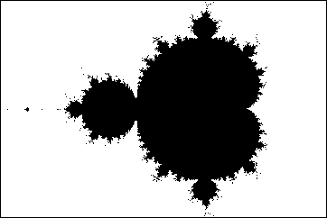
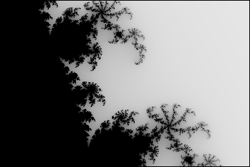
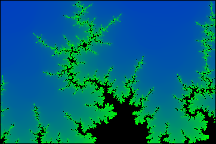
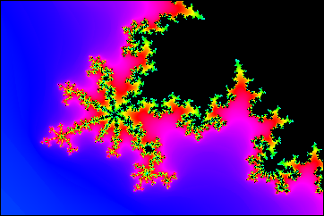
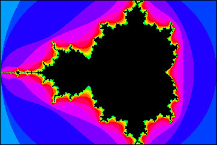
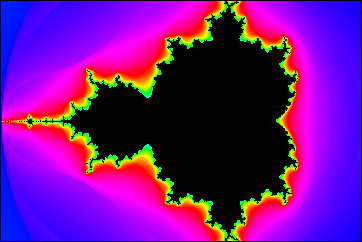
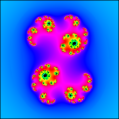

Hello and welcome to the Computer Graphics Exercise. This preface will introduce you to the two types of exercises, the distribution and submission system and the different programming languages and rendering frameworks used for the assignments.
We provide two modes of operation.
The distribution of exercises is done via StudOn. Exercise sheets are uploaded on Monday after the Lecture. You have one week to complete the assignments; they are due on Monday (12 pm [noon]) of the following week. The exercise sheets should be worked on in teams of three. You can find your team as a StudOn group once you have been assigned to one. The exercise hand-in is also done via StudOn. To hand in your solution please zip all the files marked as "submission file" on the exercise sheet. Points for your submissions as well as comments and feedback on them will be available there, too.
Tutoring is done in three ways:
The exercises will be done in HTML and JavaScript, so you will work directly inside the exercise sheets. All assignments are tested on Firefox, compatibility for other browsers is not guaranteed. During the first weeks, we will only use the HTML canvas and create 2D images using JavaScript. Later on, we will focus on 3D rendering using WebGL and - during the Advanced Exercises - also C++ and OpenGL. It is recommended, but not mandatory, to work on the C/C++ Tutorium provided on StudOn in order to prepare for the assignments. The Basic part of the exercises can be worked on in the browser, whereas the Advanced part will impose some PC requirements due to the use of C++ and OpenGL. We will try to help you make also these exercises run on your hardware, but we cannot give any guarantees!
Once you have opened the index.html file you should be able to look at the console by pressing F12 or Ctrl+Shift+K. There you see the message "This is an exemplary log!". Search for the corresponding source code to find out how to put debug information onto the console. The most helpful tool besides the console is the debugger, which is located next to the console tab. You can place breakpoints in JavaScript code to debug your programs.
For easier development, we recommend using software like the liveServer-extension for visual studio code. Firstly, it automatically reloads the page as soon as the files are changed. Secondly, accessing files from a webpage without a server is considered unsafe and can lead to errors.
Feel free to contact us via email (jonas.ej.mueller@fau.de, for organizational questions) or via the forum in StudOn or in person during the exercise slots (for content related questions).
Left you see a HTML element of type canvas (size: 200x200) that you can draw into.
Inspect the source code of this assignment sheet and have a look at the JavaScript code referring to canvas1.
To complete this task, you can copy and modify the snippet which colors the whole canvas in light blue.
In this task, you should first draw a green circle by setting the pixel colors of a canvas. In the next steps, you will first add a contour and then smooth the borders between color transitions to avoid aliasing.
Below you see the three circles you should generate in subtasks a) to c). The left circle is light green for all pixels, while the circle in the middle features an additonal contour in a darker shade of green. Both circles have a rather ragged border, which is a symptom of aliasing. You can enlarge the page to better observe the image artifacts. The right circle has smooth transitions which can be computed by weighting and mixing colors.
|  |  |  |
Copy and modify the code from Example.js and draw an opaque circle with a radius of 50 pixels around a center point located at [100, 100].
Color the pixels inside the circle green (RGB: 0, 255, 0) and leave the rest white.
Extend your solution by adding a contour of 10 pixels in a darker shade of green (RGB: 0, 127, 0). One half of the contour should be inside the initial circle, the other half outside.
You will notice the jagged contours in the sample solution images and in your solutions. This effect stems from the limited screen resolution.
Provide a simple solution for smoothing such edges by mixing the colors sensibly. Choose a one-pixel-wide border at both transitions (light green - dark green; dark green - white) and give the pixels interpolated colors, based on their particular distance to the circle center.
JavaScript provides us with some rendering utilities for drawing primitives, one of which is the arc() method .
Have a look at the documentation and implement the same circles as before using arc().
Instead of rendering into two separate canvases, draw the two circles from Task 1.1 into the same render area this time:
Replicate the two circles from the previous subtask using SVG. You will notice that vector graphics do not suffer from the same aliasing problems as your rasterized circles. The drawing is independent of resolution and the interpolation of color values is handled by the SVG drawing engine.
Note: If you encounter an error saying "Cross-Origin Request Blocked" on the console and nothing is loaded, you can proceed in one of the following ways:
Now that you know the HTML class canvas, it is time to draw something even more beautiful than the circle from Basic Exercises 1.
|  |  |  |  |
In the middle of this page, you can see two canvases. The left one will be filled with a rendering of the so-called Mandelbrot set during subtasks a) to c). The right one will show
so-called Julia sets once you have implemented subtask d).
The Mandelbrot set (named after the Polish mathematician Benoit Mandelbrot) is the set of complex numbers \(c = Re(c) + i \cdot Im(c)\) for which the sequence \((z_n), n \in \mathbb{N}\) converges. The sequence is given by the following formula: \begin{align} z_0 &= 0 \\ z_{n+1} &= f_c(z_n) = z_n^2 + c \end{align}
The Julia sets (named after the french mathematician Gaston Julia) implemented in subtask d) are sets of complex numbers closely related to the Mandelbrot set and also generated in a similar manner, using function \(f_c\).
Even though the above formula does not look like magic or art at the first sight, the pictures produced by its application (interpreting pixels of the two-dimensional plane as complex numbers) exhibit great beauty, as you can see in the example pictures above. Your task will be to implement an interactive rendering tool for the Mandelbrot set (and, later on, for Julia sets) to explore its bizarre, yet gorgeous silhouette.
|
|
|
The simplest algorithm for visualization of the Mandelbrot set is the so-called Escape Time Algorithm, which uses a fixed amount of iterations to decide whether the sequence converges (i.e., \(c\) is inside the Mandelbrot set) or diverges (i.e., \(c\) is not inside the Mandelbrot set). The pixels corresponding to complex numbers inside the set are traditionally given black color, whereas the pixels corresponding to complex numbers not in the set are shaded white (see left picture).
To produce such a picture, change function mandelbrotSet(). Some helper functions concerning complex numbers (mult, add,
sub, abs) are already given in section Complex Number Helpers, along with two constructors for complex numbers:
ComplexNumber() creates a new complex number with given real and imaginary part, ComplexNumberFromCoords() returns the
corresponding complex number for a pixel in the canvas, assuming that the canvas represents the region \([-2,1]\times[-1,1]\) in the complex plane. The latter
is already used in mandelbrotSet() to provide you with a usage example. Both constructors
have to be called using new. Implement functions f_c() and countIterations()
in section Magic Math and function getColorForIter() in section Colors and use them in mandelbrotSet() in section
Canvas Fillers to obtain the result of the leftmost picture.
Once you are able to correctly visualize the Mandelbrot set, it is time to render the exterior of the Mandelbrot set in a more informative (and also more beautiful)
way. Instead of using only the binary information about convergence/divergence for each pixel, one can easily adapt the coloration to represent how fast the
sequence is diverging for a given \(c\). In the Escape Time Algorithm, this is equivalent to shading the pixels according to the number of iterations needed to meet
the divergence condition. To do so, change function getColorForIter() according to the comments to support all four color schemes selectable from
the radio buttons (see pictures at the top of the page for reference). The changes should only affect the exterior of the set; make sure the interior is always shaded
black. For the rainbow color scheme, use HSV colors and implement conversion to RGB colors in function hsv2rgb().
|

|

|
As you might have noticed, this kind of color picking results in ugly color bands. This effect gets even worse when you use the slider to reduce the number of
iterations used for the Escape Time Algorithm (see picture above, left side). An easy way to mitigate this banding effect is to use a fractional rather than an
integer iteration count. Take a look at this explanation and change your code in function
countIterations() accordingly.
So far, it is only possible to look at the whole set in the domain \([-2,1]\times[-1,1]\). To further investigate the fractal outline of the Mandelbrot set, you have to define event listeners to enable zooming and moving the complex plane.
Three event listeners are involved in the moving process: onMouseDown(), onMouseMove() and onMouseUp() in section
Event Listeners. Use the three handlers to enable choosing a point and dragging it somewhere else. To enable zooming by turning the mouse wheel, you
only have to add the event listener onMouseWheel(), which is already given and zooms relatively to the center of the canvas.
Now the left canvas already shows the Mandelbrot set in all its glory, it is time to fill the right one with renderings of Julia sets. Unlike
in the case of the Mandelbrot set, there is not only one Julia set: You can find one for each complex function! In this assignment, you will restrict yourselves to Julia sets
emerging from the same function as the Mandelbrot set. This time, the set is formed by all complex numbers \(z\) for which the sequence \((z_n), n \in \mathbb{N}\)
converges for a fixed \(c\). To sum up, the choices of \(z\) and \(c\) are:

Using this knowledge, change function juliaSet() in section Canvas Fillers to display the Julia set for the \(c\) stored in the global variable
juliaC. The functions needed to perform the rendering have already been implemented in the last assignment. The result should look like the picture on
the right (for 30 iterations and the rainbow color scheme).
Once this works, you can choose a new \(c\) by holding the CTRL key pressed and clicking on the Mandelbrot canvas. This way, you can explore the relationship between the Mandelbrot set and this kind of Julia sets.
When you have found interesting \(c\)s, you can also define a line by holding the shift key pressed and clicking on two points on the Mandelbrot canvas.
The variable juliaC will then be moved back and forth along the line (depicted in white) across the complex plane.
This way, you can create a mesmerizing Julia set animation for every line you define!